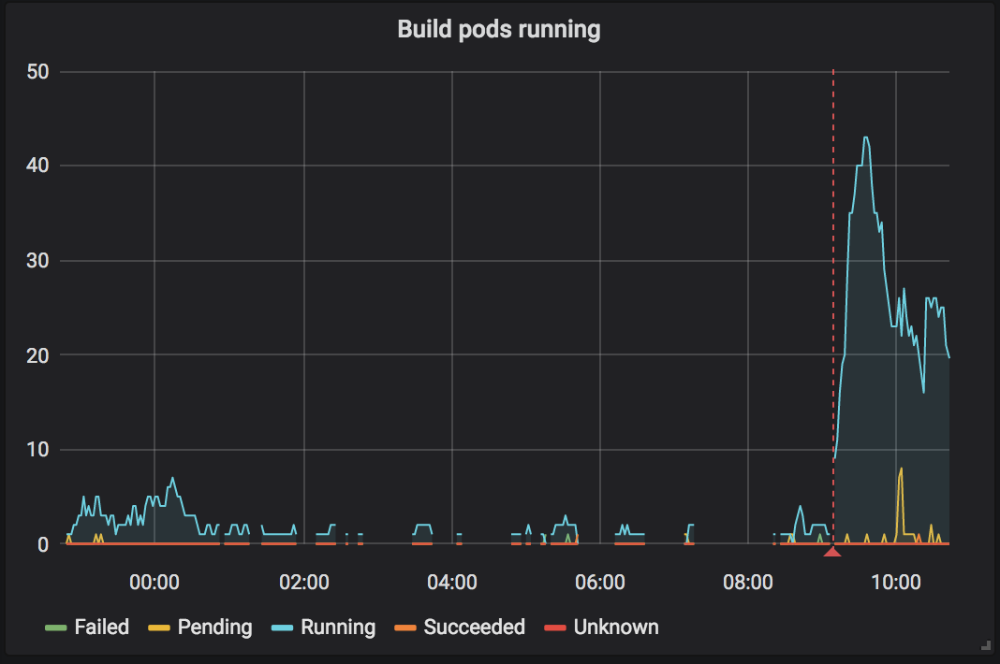
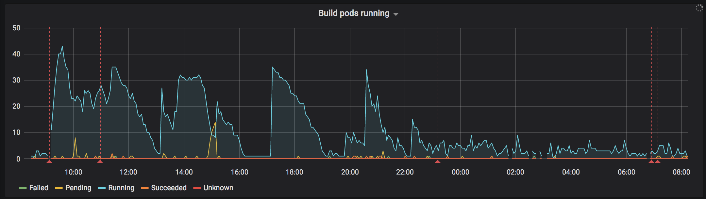
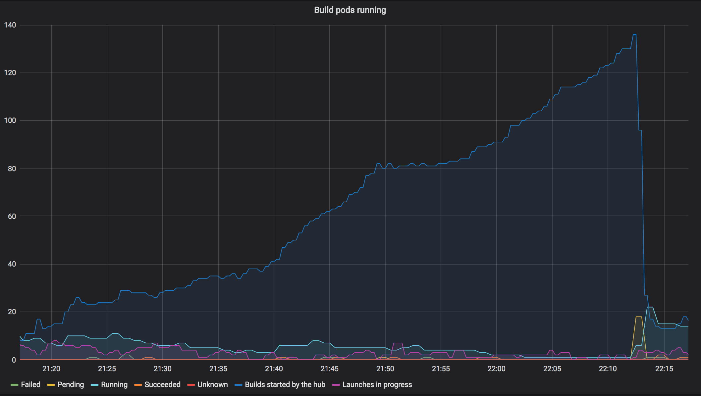

2019-03-24, repo2docker upgrade and docker image cache wipe¶
Summary¶
User’s experienced long wait times for the images to build, fixed by banning the JupyterLab demo repository. The problem was that a single repository that is very popular and takes a long time to build will end up consuming all available “build slots”. Incident lasted most on Sunday day in Europe.
Timeline¶
All times in UTC+1 (Zurich time)
2019-03-24 8:54¶
Start of incident. New version of repo2docker is deployed and the build prefix is bumped. This effectively clears the docker image cache. Repositories start building. We quickly accumulate build pods. Things appear to work.

18:45¶
Builds are backlogged. As not a lot of binders are running the auto-scaled cluster is small which limits the amount of resources available to build images. Decision taken to add two new nodes to provide additional resources for building pods

18:54¶
Two new nodes were added as a separate node pool. These nodes had no “Local SSD” assigned to them. This was a mistake in setting up the node pool.
19:14¶
New builds weren’t starting, number of running build pods kept decreasing. When triggering a new build and watching the logs we never see a log message that the build pod has been launched. This is consistent with the UI on the web interface. However unclear why the build pods are not being launch.
Suspect something is “stuck” in the BinderHub pods, restarted one of them. New builds start happening.
19:57¶
Reports of builds happening but then erroring with “no disk space”, images
are not pushed to the registry. Notice that the extra node pool does not have
local SSD drives after ssh’ing to some old and new nodes and comparing output
of df -h on each. Recreate node pool with correctly configured nodes.
Restarted the second bhub pod.
22:18¶
Notice that builds are not starting and number of running build pods is low.
Start investigating where the builds are queued. Added a new metric to the “Running Build Pods” chart on grafana to show number of builds “started” by BinderHub.

Each “build” is either someone requesting a repository that has not been built or is in the process of being built. The number of actually running builds keeps decreasing over time, while the number of “started builds” keeps growing. The big drop is when we deleted the build pod for the JupyterLab demo repository
22:36¶
Decide to start a build for JupyterLab demo repo and then ban it to allow other repository builds to make progress. Once the JLab build is done we will unban it again.
2019-03-25 7:01am¶
JupyterLab demo repo build completed, repository was unbanned again. Incident resolved.
Lessons learnt¶
What went well¶
List of things that went well. For example,
We managed to update repo2docker and wipe the build cache without causing a total outage.
What went wrong¶
Things that could have gone better. Ideally these should result in concrete action items that have GitHub issues created for them and linked to under Action items. For example,
We generate a lot of load when wiping the cache and had no ready-to-go instructions for adding extra nodes to the cluster.
Where we got lucky¶
These are good things that happened to us but not because we had planned for them. For example,
Users were super understanding and supportive that things were slow and builds did not start for several hours.
Action items¶
Process improvements¶
Need to devise a strategy for wiping the build cache without generating a huge load.
Documentation improvements¶
Add a command that can be copy&pasted to add a new node pool to avoid configuration errors.
Technical improvements¶
Change our build thread pool setup so that a single slow to build and popular repository does not end up using all available build slots.